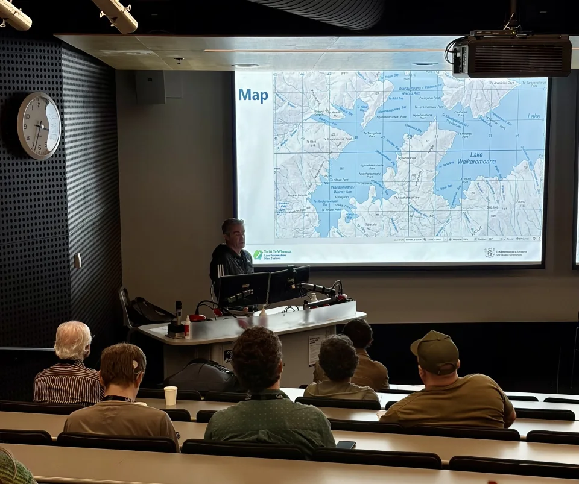
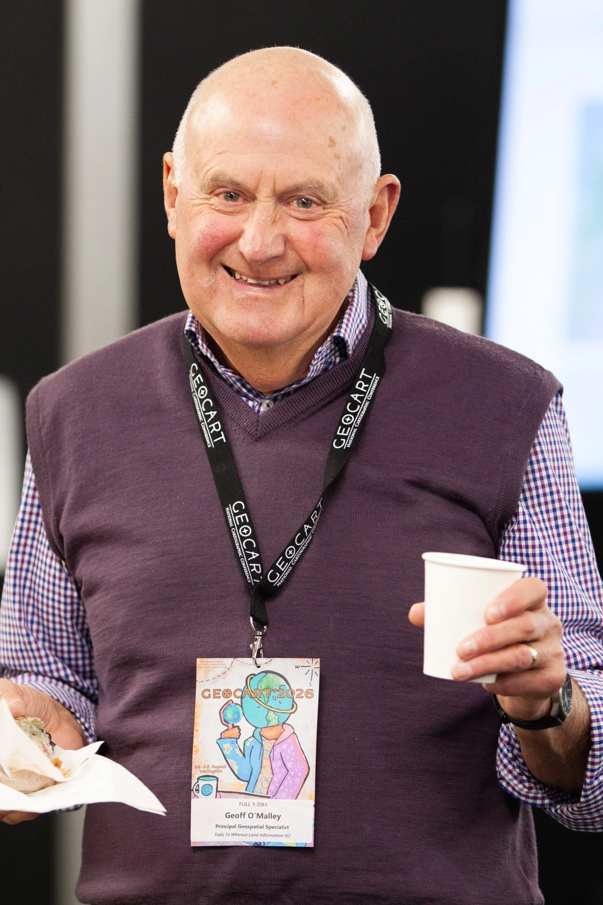
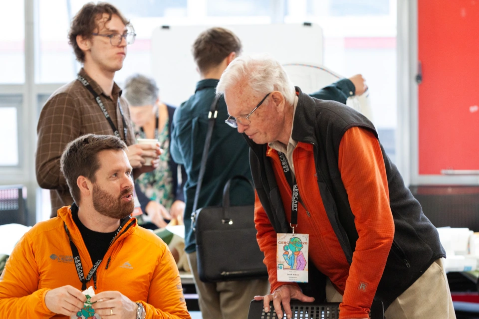
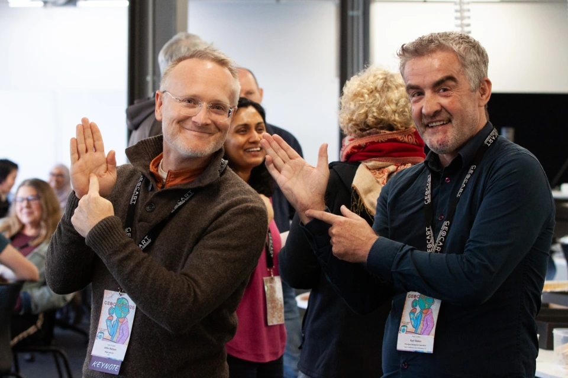
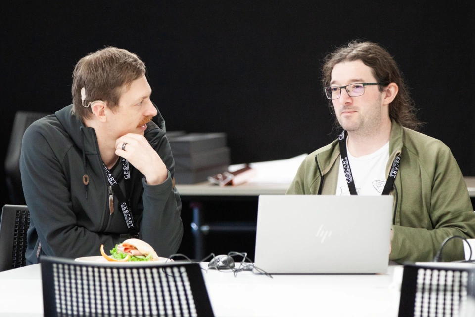
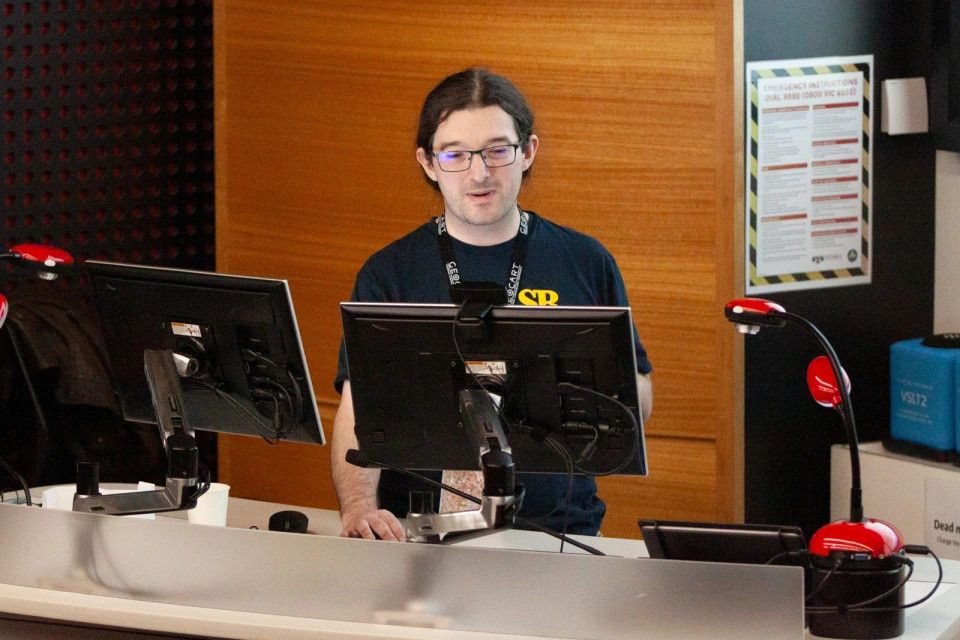
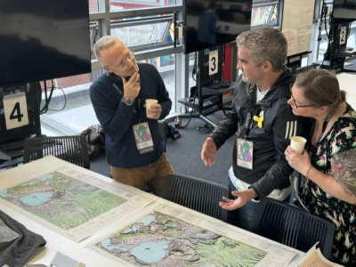
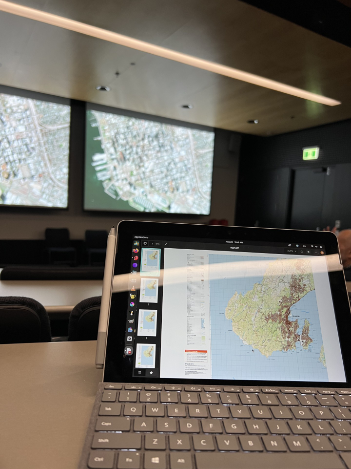

The GeoCart conferences aim to bring together a wide cross-section of professionals, researchers, and enthusiasts engaged in cartography, map curatorship and research, geovisualisation and GIScience.






1 of 6
Last week the 12th National Cartographic Conference, GeoCart'2026, was held at Victoria University of Wellington (VUW)'s Te Aro campus. A biennial event, GeoCart has long been supported by Toitū Te Whenua Land Information New Zealand (LINZ), both through the contributions of our kaimahi and financially as Platinum sponsor.
This year, LINZ sent a 20-strong delegation to learn from and network with our colleagues in the wider geospatial community. These included Shannon McColley (conference director), Melissa West (organising committee), and presenters Karl Baker, Christopher Stephens, and Faisal Zaman.
A need for maps
The theme of GeoCart'2026 was Mapping in Times of Need. This is especially poignant in an era of rapidly changing environments, new technologies, climate change and geopolitical uncertainty. The conference saw its largest attendance since 2018, with representatives from New Zealand, Australia and the United States. Keynotes from John Nelson from Esri, Mairéad de Róiste from VUW, and Robin Skinner from VUW brought fresh energy, enthusiasm and excitement for exploring maps and spatial data, both contemporary and historical.
Quickfire Cartography
A brand-new session for 2026 was Quickfire Cartography. Presenters had just four minutes each to showcase how they made a map. It was so popular, you can be sure it'll return for 2028, hopefully with more presenters from LINZ!
Swapping treasures
Returning for the second time was the Map Swap, a table full of maps, books, and other cartographic treasures brought by attendees to find new homes. Many surplus maps were donated by LINZ and most went home with someone else! The Map Swap proves there is demand for old cartographic materials if the geospatial community is given an opportunity to claim them.
Presentations by LINZ kaimahi:
Karl Baker - A tour of New Zealand's Future Topographic Mapping Project
Karl Baker - Using QGIS 4.0 to meticulously place labels: How the pros do it
Christopher Stephens - The review of New Zealand's Antarctic place names
Faisal Zaman - CadastrAR: Collaborative mixed-reality for cadastral field decision support
Some comments and feedback from presenters and attendees
Geoff O'MalleyMatanga Tātai Wāhi Matamua / Principal Geospatial Specialist
“Another great NZ Cartographic Society GeoCart conference! An amazing array of Cartographic/GIScience presentations with international and national speakers from business, central and local government, education and Māori communities.”
“My favourite speaker was Robin Skinner, presenting ‘The first map of the city of Wellington?: Heaphy's plan of Britannia’. Robin was by far the most thoroughly engaging and passionate speaker I encountered. Asked to prepare and fill in at the last minute, he was highly prepared and entertaining. The history jumped out the map and came to life – truly mesmerising for the audience.”
The “Plan of the City of Britannia in Lambton Harbour, Port Nicholson, New Zealand” by nineteen-year-old Charles Heaphy held at Te Papa Tongarewa is often described as “the earliest known map of Wellington”. This paper attempts to place the plan in the context of the activities of the New Zealand Company in the early 1840s. It is argued that, while this is the oldest surviving plan, it is in fact the second plan, produced as an archival copy. Further information was added over time, with some significant annotations discernible, offering insight into the workings of the settlement and the exchanges with company officials in London in the colony's first months. Finally, the paper speculates on how the plan survived, while the original plan and surveyors' initial terrain records have been lost. (Abstract, source cartography.org.nz | geocart 2026 schedule)
Wendy Shaw, NZ Geographic Board also add some valuable additional insights, that without the support of local Māori, many of the European settlers would not have survived initially as they did not arrive to the urbanised infrastructure they were expecting in the earliest days of the new settlement to be known as ‘Wellington’.”
Chris StephensMatanga Ture Kiritaki / Customer Regulatory Specialist
I was impressed and entertained by the creativity and technical depths of John Nelson in his keynote, but especially in the later ‘Map Wizardry!’ session on Friday with John Nelson and (GeoCart returnee) Ken Field. Their presentation skills are second to none.
A thought-provoking presentation was by Amy L. Griffin (RMIT University) on overcoming accessibility challenges for static and dynamic maps. Under the Web Accessibility Standard 1.2 which LINZ must comply with, there's a carve out for ‘Complex visual maps’, essentially because it's ‘too hard’. But the presentation explored what was in fact, possible and useful for accessibility.
A recurring theme across nearly all presentations was the benefits of the open-source data ecosystem NZ with numerous shout outs to LINZ's open data. There would be significant impacts to innovation and research across government, business, academia if this ever changed.’
Melissa WestMatanga Tātai Wāhi Matamua / Principal Geospatial Specialist
“It was great to be at this year's conference and see the continued range of innovative work happening across the geospatial community. One thing it reinforced for me is that all of these amazing applications, products, and services rely on strong foundations.
‘The LINZ Topo Maps squad plays a vital and important role in providing that foundation through authoritative topographic data.
‘Our work often sits behind the scenes, but it's rewarding to see how it helps enable everything from emergency response and planning through to analysis, navigation, and decision-making. Seeing what others are building on top of that data is a great reminder of why our work matters.”
Faisal ZamanMatanga Matihiko Matua / Senior Digital Specialist - Development
“Having the chance to present at GeoCart was a real highlight for me. I enjoyed hearing from others across the geospatial community and seeing the wide range of ways location data is being applied to solve real world problems. It was also great to be back at VUW, as the conference venue brought back fond memories of my time studying there.”
‘I attended the last day of GeoCart and my favourite presentation was the map wizardry session by Ken Field and John Nelson from ESRI, demonstrating the power of ArcGIS to create innovative and unusual maps about absolutely anything.
‘They were seasoned presenters with great wit, gags and some amazing maps to showcase. My favourite maps were the Football World Cup map and the map showing Ozzy Osbourne and Black Sabbath concerts (where Ozzy was lead singer) around the world, both designed by Ken Field.’ Note: the map is in the top row, second from left.
Shi ChenMatanga Tātai Wāhi / Geospatial Specialist
‘The conference featured a high calibre of speakers and provided valuable insights across the geospatial sector. One of my key takeaways was that maps can be much more than tools for navigation and analysis.
‘The conference opened my mind to different ways maps can be expressed, including as a form of art and storytelling. I particularly enjoyed learning about the stories, history, and perspectives behind maps, which gave me a deeper appreciation of their cultural and human significance.’
Karl BakerMatanga Tātai Wāhi Matamua / Principal Geospatial Specialist
‘It was my 5th GeoCart and would have to be one of my favourites. A pinch-me moment was John Nelson and I talking about a map I made using his online tutorial, to make maps jump off the paper. I was so tied up in the moment I only half noticed the person on my shoulder.

John and Karl discussing the maps.
To me, the map is the snapshot of the first 20 years of my life and incredibly deep – 1980s Rotorua.
A special comment he made was that it was very cool that the map had become a gift. It was given to Api as an A2.
My takeaway was that Future Topographic Maps (FTM) is on-track. The second photo (below) is an NZDF laptop making a NZTopo50 map during a keynote speech.

The NZDF laptop making a NZTopo50 map as mentioned by Karl.
This was set up via instructions from our shared Slack channel.
FTM is placing the technology so that the concept can be implemented and then the story for change can be shown and not just told.
My favourite session was the one I was in - a single connected topic and four independent but connected talks.
The Australian speaker who started acknowledged mana whenua, which was the only time outside the opening session that I heard it.
My talk started with a mihi that acknowledged the place, people, university and visitors.
My favourite speaker was Mairéad de Róiste for her Keynote. It went from total embarrassment for me when she showed my LinkedIn profile and started talking about that post, to satisfaction when she explained how it had boosted her as a result. Plus, watching a map made using embroidery is riveting.
My favourite moment was sharing a dinner table with the LINZ “kids”. Hearing what they were getting from the conference and understanding what matters to them was great. Also, when they said how much they enjoyed the presenters that are my good friends, feeling that kōrero tuku iho.’